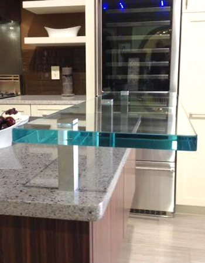
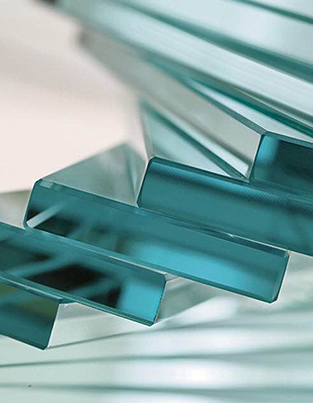

Flotados
Tradicionalmente denominado cristal plano, el vidrio Float o flotado es insustituible cuando se desea obtener una visión clara sin distorsión óptica y constituye la materia prima por excelencia para ser transformado en vidrio templado, laminado, fabricar espejo y manufacturar unidades de doble vidriado hermético.
Aplicación
Como herramienta de diseño sus posibilidades están sólo limitadas por la creatividad de los usuarios y por los criterios de seguridad, que siempre deben ser tenidos en cuenta en todas las aplicaciones del vidrio plano en arquitectura, vehículos y componentes de equipamiento.